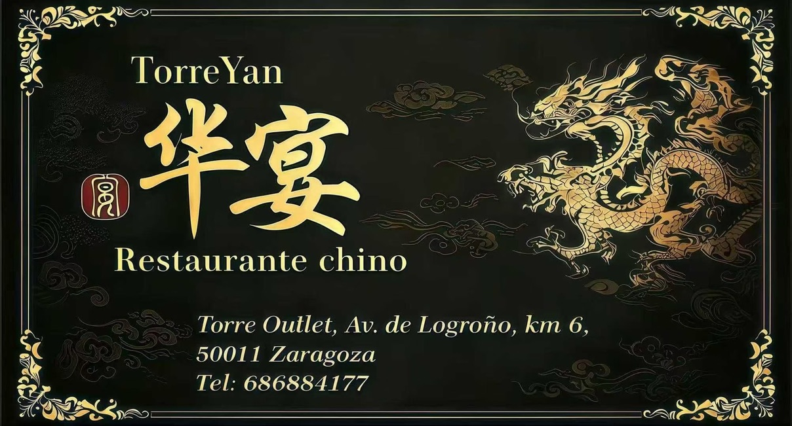
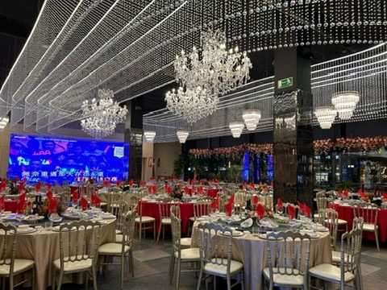

¡Descubre el
nuevo TorreYan 华宴!
Una cocina tradicional china en constante evolución, en el corazón de Zaragoza.
RESERVAR
Una cocina tradicional china en constante evolución, en el corazón de Zaragoza.
RESERVAR
Nacido en la rica herencia culinaria de Asia, TorreYan llega a Zaragoza para redefinir el concepto de alta gastronomía china. Crecimos influenciados por la diversidad agrícola de nuestra tierra.
Desde pequeños, empezamos a cocinar usando ingredientes locales, desarrollando una pasión por la experimentación culinaria manteniendo intacta el alma de la receta original.
Valoramos la riqueza de la gastronomía asiática y, junto a las técnicas modernas, buscamos mostrar su versatilidad y potencial para la innovación.
¡Bienvenido a las cocinas de TorreYan!
Fusionamos experiencias que nos llevan a elaborar platos con sabores inexplicables y con una personalidad auténtica.
Seguimos técnicas tradicionales y somos conocedores del sabor real de cada ingrediente chino desde su cultivo.
Nuestra comida no solo está para agradar al paladar, sino para dar valor a nuestros orígenes y hacer sentir la diversidad gastronómica, y así seguir disfrutando del placer de combinar y crear nuevos sabores.
